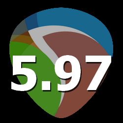

^
ProjectSettings_SetVideoFramerate
Lua: boolean retval = ultraschall.ProjectSettings_SetVideoFramerate(integer framerate, boolean persist)
sets the video-framerate of the current project and optionally the default video-framerate for new projects
returns false in case of an error
Returnvalues:
| boolean retval |
| true, setting was successful; false, setting was unsuccessful |
Parameters:
| integer framerate |
the framerate in fps from 1 to 999999999;
0, 29.97 fps DF
-1, 23.976 fp
-2, 29.97 fps ND |
| boolean persist |
| true, set these values as default for new projects; false, don't set these values as defaults for |
^

 VID_Pixels2VideoUIStateCoords
VID_Pixels2VideoUIStateCoords
Lua: number uistate_x, number uistate_y = ultraschall.VID_Pixels2VideoUIStateCoords(integer x, integer y, integer videowindow_width, integer videowindow_height)
converts the ui_state-coordinates of the Video-Processor into pixel-coordinates within the Video Window
You should add x and y-position of the Video-Processor-window, to get the actual screen-coordinates.
returns nil in case of an error
Returnvalues:
| number x_coordinate |
| the converted x-coordinate, that reflects the values within the video-processor function ui_get_state |
| number y_coordinate |
| the converted y-coordinate, that reflects the values within the video-processor function ui_get_state |
Parameters:
| integer x |
| the x-coordinate within the Video-Window |
| integer y |
| the y-coordinate within the Video-Window |
| integer videowindow_width |
| the current width of the Video Window |
| integer videowindow_height |
| the current height of the Video Window |
^
VID_VideoUIStateCoords2Pixels
Lua: integer x_coordinate, integer y_coordinate = ultraschall.VID_VideoUIStateCoords2Pixels(number uistate_x, number uistate_y, integer videowindow_width, integer videowindow_height)
converts the ui_state-coordinates of the Video-Processor into pixel-coordinates within the Video Window
You should add x and y-position of the Video-Processor-window, to get the actual screen-coordinates.
returns nil in case of an error
Returnvalues:
| integer x_coordinate |
| the converted x-coordinate |
| integer y_coordinate |
| the converted y-coordinate |
Parameters:
| number uistate_x |
| the x-coordinate, that the function ui_get_state within the videoprocessor returns |
| number uistate_y |
| the y-coordinate, that the function ui_get_state within the videoprocessor returns |
| integer videowindow_width |
| the current width of the Video Window |
| integer videowindow_height |
| the current height of the Video Window |
^
 GetVideoHWND
GetVideoHWND
Lua: HWND hwnd = ultraschall.GetVideoHWND()
returns the HWND of the Video window, if the window is opened.
returns nil if the Video Window is closed
Returnvalues:
| HWND hwnd |
| the window-handler of the Video Window |